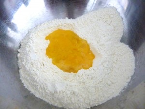
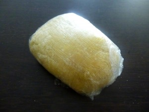
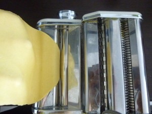
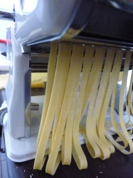
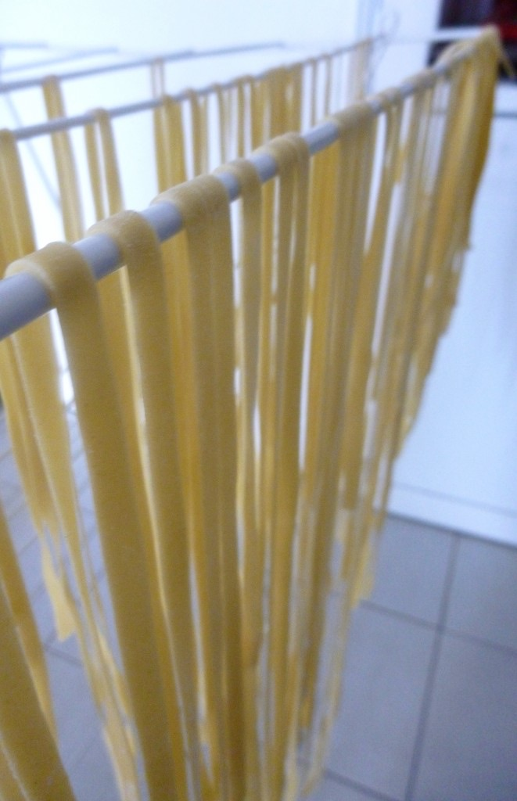

Les pâtes fraîches

Buongiorno!! Et si on mangeait des pâtes fraîches ?
Je vais vous parler de la recette pour faire de délicieuses pâtes fraîches soi-même . Il y a plusieurs variantes de la recette des pâtes fraiches mais je vais vous parler de la plus « classique » (Le principe: 100g de farine – 1 œuf).
Normalement, il faut compter 100g de farine pour une personne. Normalement 200g devraient donc suffire pour deux mais pour nous j’utilise 300g donc il faut doser selon si vous êtes oui ou non de gros mangeurs 😉
Avant de commencer la recette des pâtes fraîches, quelques points sont essentiels :
– Préférer une farine t55 et éviter de mélanger les farines entre elles. – Sortir vos œufs à l’avance pour qu’ils soient à température ambiante et choisissez de bons œufs frais (poules élevées en plein air: avec le petit 1 au début de la suite de chiffre sur la coquille). – Respecter le temps de repos de la pâte car c’est ce qui va permettre son élasticité.
Ici vous trouverez la recette des pâtes à la carbonara mais attention je parle des vrais carbonara celle que l’on vous sert en Italie et non pas nos carbo lardons crème fraîches qui ne sont qu’une copie 😉
Ingrédients
- Farine - 300g
- Oeufs - 3
- Sel
Instructions
- Dans une jatte verser la farine, mélanger avec le sel puis creuser un puit au milieu de celle-ci ;
- Casser les œufs dans le puit et avec une fourchette commencez à les battre en y incorporant petit à petit la farine autour du puit ;
- Continuer à pétrir à la main (si la pâte est trop collante n'hésitez pas à rajouter un peu de farine) ;
- Former une boule et enveloppez la de film alimentaire ;
- Laisser reposer au frais minimum 1h ;
- A la sortie du frigo séparer votre pâte en plusieurs petits pâtons (ceux que vous n'allez pas utiliser tout de suite, remettez les sous le film alimentaire pour ne pas qu’ils s'assèchent) ;
- Passer maintenant votre pâte dans le laminoir en commençant par le cran numéro 1 ;
- Répéter l'opération au moins quatre ou cinq fois au cran 1 en la repliant plusieurs fois sur elle même afin d'obtenir une pâte bien lisse et de bonne largeur ;
- Passer la ensuite à chaque cran environ deux fois / trois fois jusqu’à obtenir l’épaisseur de pâte souhaitée (personnellement pour les linguines je préfère m’arrêter au cran n°6)
- Laisser les maintenant sécher (le temps de séchage varie suivant plusieurs paramètres: l'humidité ambiante, la chaleur de vote pièce etc... Je ne peux donc pas être plus précise )
- Couper ensuite vos pâtes (tagliatelles , spaghettis, linguines etc.. selon vos goûts)
- Laisser les sécher plus ou moins longtemps (ça c'est une question de goût tout en sachant que plus vous les laisserez sécher , plus la cuisson sera longue) ;
- Cuire dans un grand faitout d'eau salée (sans rajouter d'huile !!) et goûter régulièrement le mieux étant d'obtenir bien entendu des pâtes al dente!





Les tips de la communauté
Recette de pâtes fraîches bien reçue. Les commentateurs apprécient les pâtes aux épinards et la cuisine italienne traditionnelle. Bonne expérience de fabrication à la main au rouleau.
Astuces
- Sécher les pâtes en les suspendant comme suggéré par l'auteure
Variantes suggérées
- Pâtes aux épinards